速览
聊聊樱井的公司「有限会社 Sora」。有限会社这种形式，日本自 2006 年《公司法》施行以来已不能新设，但觉得有趣就一直保留——反正也不打算卖股份。Sora 是樱井为了与其他公司签约而设立的公司，一般的游戏制作人员几乎没有，也不招聘。通常创作者独立后，会开公司招人、组织化来做游戏；但那样常常被社长业务忙得不可开交，为了养人又不得不运营下去，结果无法专注于关键的游戏制作。他觉得像他这样一个导演单独游荡也挺有意思。他虽然独立，但多与其他公司联合制作，一旦工作就像公司职员一样按固定时间上班；一部作品开始导演后，原则上专注于它。关键的收入方面：他多签开发期间不收费用的合约——软件完成、发售、产生第一笔销售之前分文不取，之后按销量获得收入。若项目中途流产，收入当然为零，哪怕他毫无责任，风险很高。非大厂内部的一般外包公司，通常作为开发方每月收取固定金额，这对税务有利、也是维持员工所需；而卖软件的发行商要卖出才有利润，他为了共担这份风险而特意不在中途收开发费。未来是否永远如此不确定，可能要视情况而定，但至少养活自己一个人不成问题。所以：Sora 不招人、不开放窗口，请不要寄简历。他确实也想要员工，但想另外以某种形式培养。也犹豫过是否该正式公司化，但他挺喜欢现在这种随性的位置。
1. 有限会社这种形式 0:03
有限会社这种形式，日本自 2006 年《公司法》以来已经不能新设，但觉得有趣就保留着——反正也不打算卖股份。
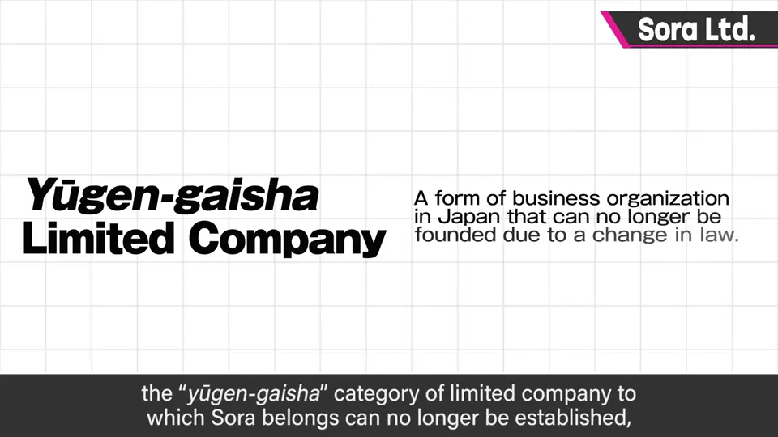
2. 为签约而设的公司 0:28
Sora 是樱井为了和其他公司签约而设立的公司，几乎没有一般的游戏制作人员，也不招聘。
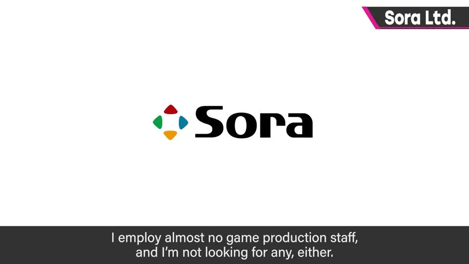
通常创作者独立后会开公司、招人、组织化做游戏。但那样常常忙于社长业务，为了养活员工不得不运营下去，结果无法专注于最关键的游戏制作。
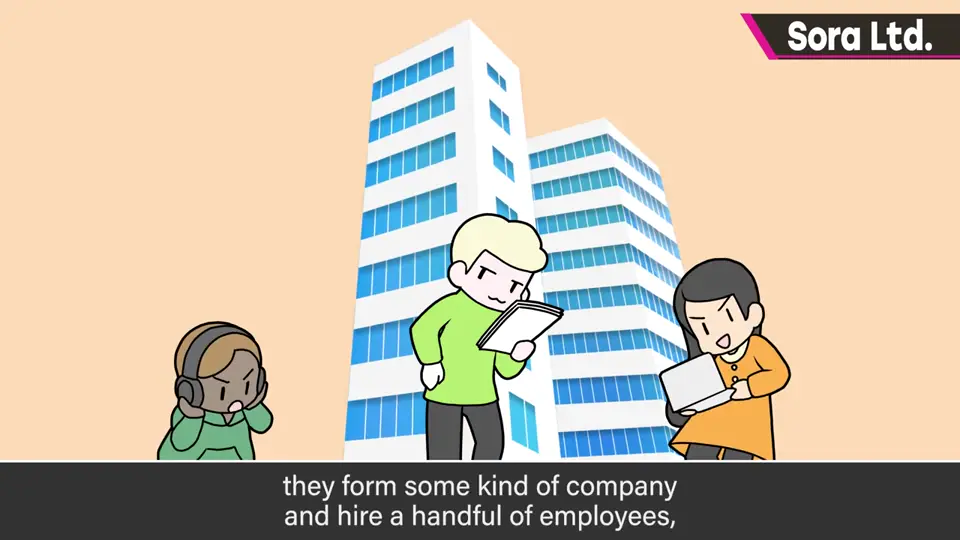
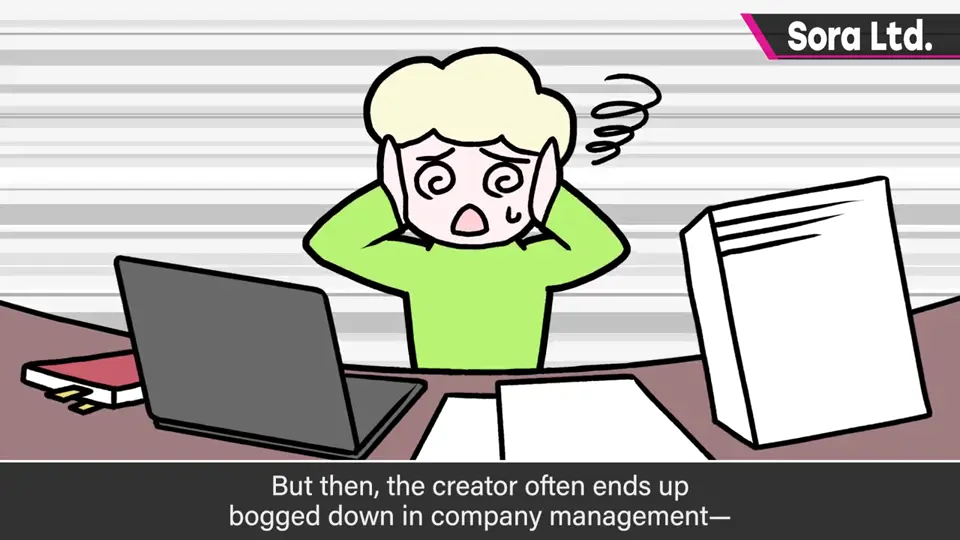
3. 工作方式 1:06
他虽然独立，但多与其他公司联合开发，一旦开工就像职员一样按固定时间上班；一部作品开始导演后，原则上专注于它。
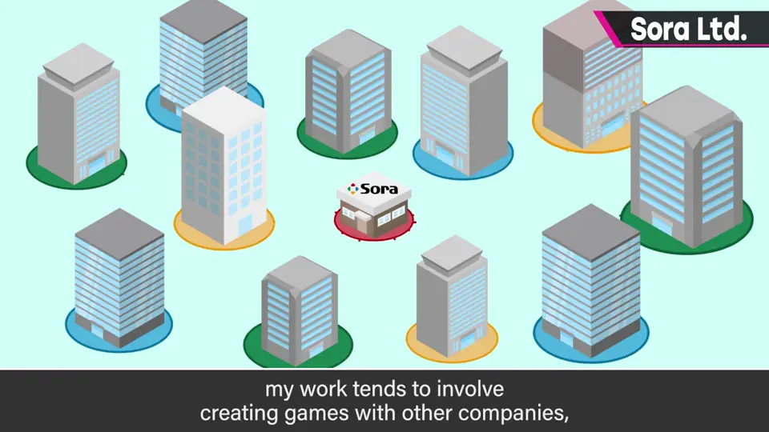
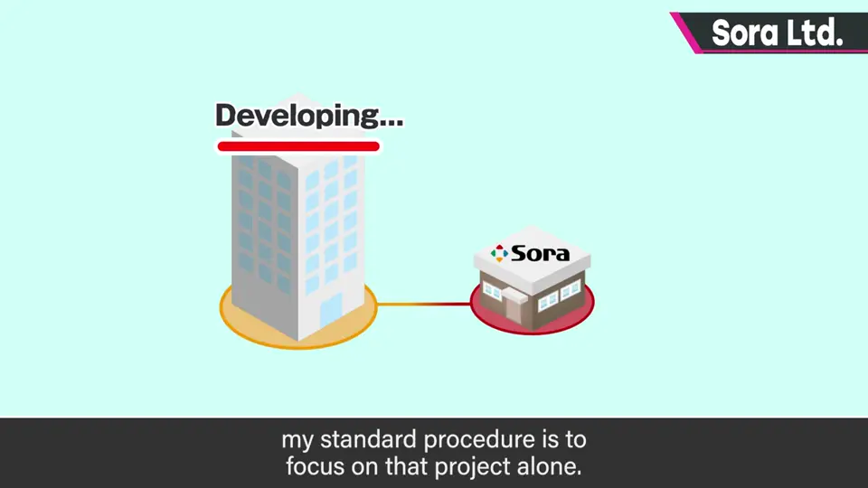
4. 收入：发售后按销量 1:28
他多签开发期间不收费用的合约：软件完成、发售、产生第一笔销售之前分文不取，之后按销量获得收入。
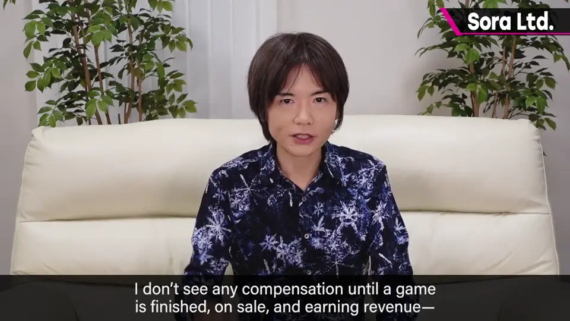
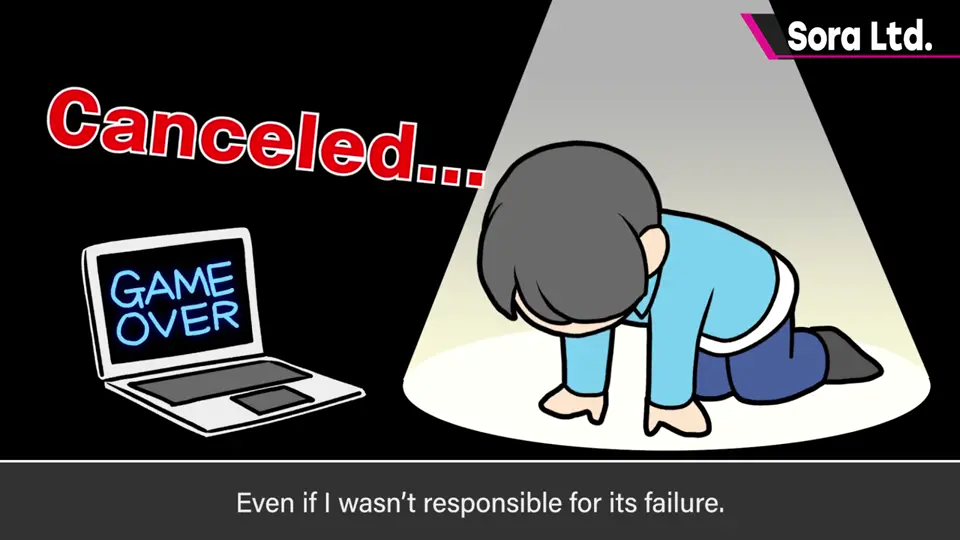
非大厂内部的一般外包公司，通常每月收取固定开发费，这对税务有利、也是维持员工所必需。
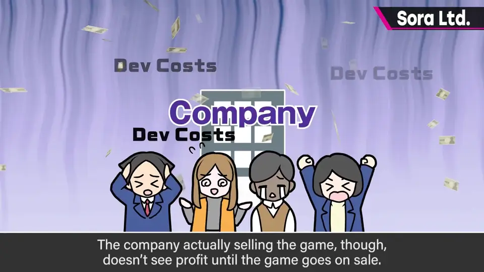
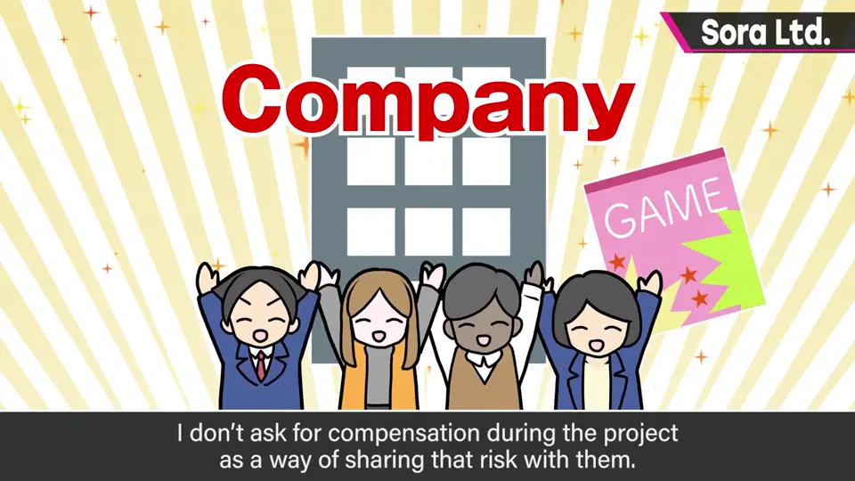
而卖软件的发行商要卖出才有利润。为了共担这份风险，他特意不在中途收开发费。
以后是否一直如此不确定，也许要视情况而定，但至少养活他一个人不成问题。
5. 请别寄简历 2:38
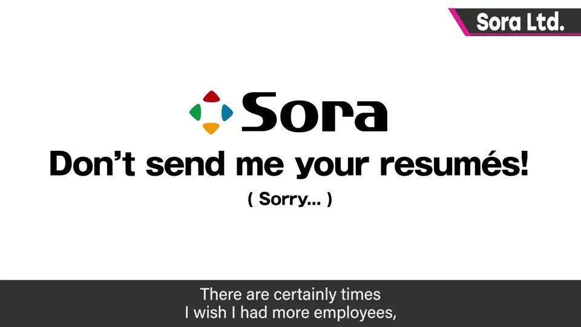
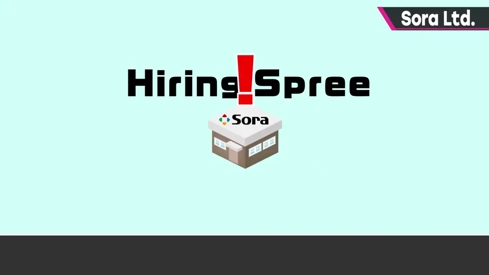
确实也有想要员工的时候，但想另外以某种形式培养。也犹豫过是否该正式公司化，但他挺喜欢现在这个随性的位置。
自测题
1. 有限会社 Sora 的定位是什么？
樱井与其他公司签约用的公司，几乎没有制作人员，也不招聘。 0:30
2. 樱井的收入模式与一般外包公司有何不同？
开发期间不收费，发售后按销量拿收入；一般外包每月收固定开发费。 1:40
3. 他为什么选择这种高风险的收入方式？
为了与要卖出才有利润的发行商共担风险。 2:20